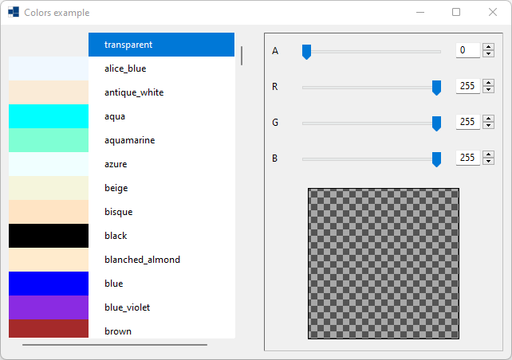
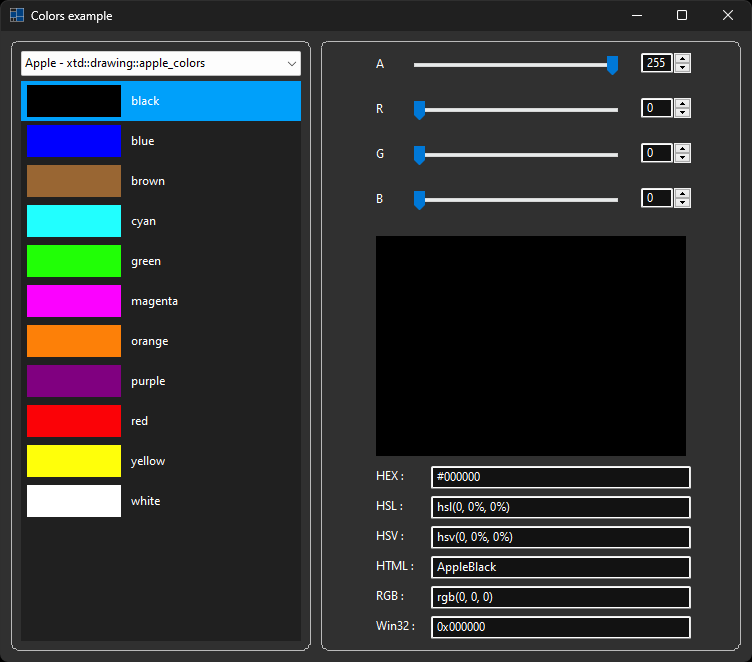
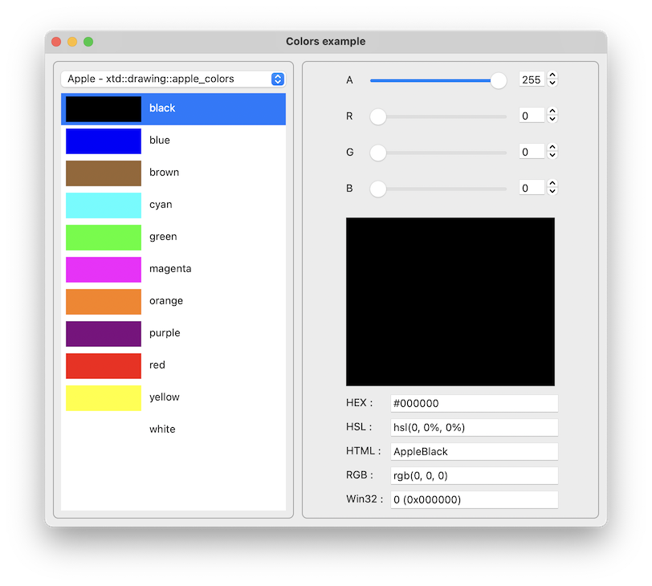
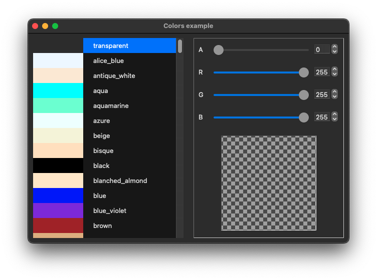
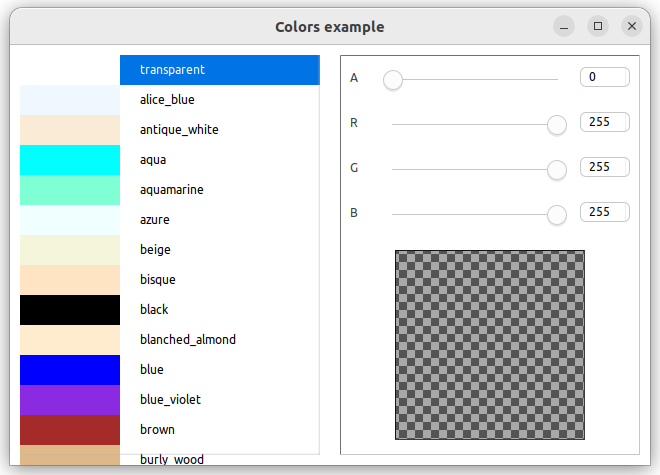
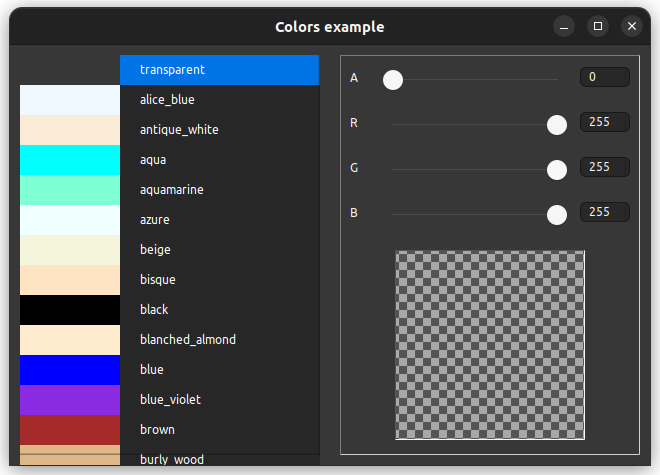

|
xtd
1.0.0
|
Loading...
Searching...
No Matches
colors.cpp
demonstrates the use of xtd::forms::user_control control with xtd::drawing::color.
- Windows


- macOS


- Gnome


#include <xtd/xtd>
using namespace xtd::drawing;
auto print_line() {
println(::format, string('-', 26), string('-', 7), string('-', 28), string('-', 27), string('-', 27), string('-', 24), string('-', 18), string('-', 8));
}
auto print_title() {
print_line();
print_line();
}
println(::format, color.name(), color_translator::to_hex(color), color_translator::to_cmyk(color), color_translator::to_hsl(color), color_translator::to_hsv(color), color_translator::to_html(color), color_translator::to_rgb(color), string::format("0x{:x6}", color_translator::to_win32(color)));
}
auto main() -> int {
print_title();
print_color(color);
print_line();
}
// This code produces the following output :
//
// | -------------------------- | ------- | ---------------------------- | --------------------------- | --------------------------- | ------------------------ | ------------------ | -------- |
// | Name | Hex | CMYK | HSL | HSV | HTML | RGB | Win32 |
// | -------------------------- | ------- | ---------------------------- | --------------------------- | --------------------------- | ------------------------ | ------------------ | -------- |
// | transparent | #000000 | cmyk(0%, 0%, 0%, 100%) | hsl(0, 0%, 0%) | hsv(0, 0%, 0%) | Transparent | rgb(0, 0, 0) | 0x000000 |
// | alice_blue | #f0f8ff | cmyk(6%, 3%, 0%, 0%) | hsl(208, 100%, 97%) | hsv(208, 6%, 6%) | AliceBlue | rgb(240, 248, 255) | 0xfff8f0 |
// | antique_white | #faebd7 | cmyk(0%, 6%, 14%, 2%) | hsl(34, 78%, 91%) | hsv(34, 14%, 14%) | AntiqueWhite | rgb(250, 235, 215) | 0xd7ebfa |
// | aqua | #00ffff | cmyk(100%, 0%, 0%, 0%) | hsl(180, 100%, 50%) | hsv(180, 100%, 100%) | Aqua | rgb(0, 255, 255) | 0xffff00 |
// | aquamarine | #7fffd4 | cmyk(50%, 0%, 17%, 0%) | hsl(160, 100%, 75%) | hsv(160, 50%, 50%) | Aquamarine | rgb(127, 255, 212) | 0xd4ff7f |
// | azure | #f0ffff | cmyk(6%, 0%, 0%, 0%) | hsl(180, 100%, 97%) | hsv(180, 6%, 6%) | Azure | rgb(240, 255, 255) | 0xfffff0 |
// | beige | #f5f5dc | cmyk(0%, 0%, 10%, 4%) | hsl(60, 56%, 91%) | hsv(60, 10%, 10%) | Beige | rgb(245, 245, 220) | 0xdcf5f5 |
// | bisque | #ffe4c4 | cmyk(0%, 11%, 23%, 0%) | hsl(33, 100%, 88%) | hsv(33, 23%, 23%) | Bisque | rgb(255, 228, 196) | 0xc4e4ff |
// | black | #000000 | cmyk(0%, 0%, 0%, 100%) | hsl(0, 0%, 0%) | hsv(0, 0%, 0%) | Black | rgb(0, 0, 0) | 0x000000 |
// | blanched_almond | #ffebcd | cmyk(0%, 8%, 20%, 0%) | hsl(36, 100%, 90%) | hsv(36, 20%, 20%) | BlanchedAlmond | rgb(255, 235, 205) | 0xcdebff |
// | blue | #0000ff | cmyk(100%, 100%, 0%, 0%) | hsl(240, 100%, 50%) | hsv(240, 100%, 100%) | Blue | rgb(0, 0, 255) | 0xff0000 |
// | blue_violet | #8a2be2 | cmyk(39%, 81%, 0%, 11%) | hsl(271, 76%, 53%) | hsv(271, 81%, 81%) | BlueViolet | rgb(138, 43, 226) | 0xe22b8a |
// | brown | #a52a2a | cmyk(0%, 75%, 75%, 35%) | hsl(0, 59%, 41%) | hsv(0, 75%, 75%) | Brown | rgb(165, 42, 42) | 0x2a2aa5 |
// | burly_wood | #deb887 | cmyk(0%, 17%, 39%, 13%) | hsl(34, 57%, 70%) | hsv(34, 39%, 39%) | BurlyWood | rgb(222, 184, 135) | 0x87b8de |
// | cadet_blue | #5f9ea0 | cmyk(41%, 1%, 0%, 37%) | hsl(182, 25%, 50%) | hsv(182, 41%, 41%) | CadetBlue | rgb(95, 158, 160) | 0xa09e5f |
// | chartreuse | #7fff00 | cmyk(50%, 0%, 100%, 0%) | hsl(90, 100%, 50%) | hsv(90, 100%, 100%) | Chartreuse | rgb(127, 255, 0) | 0x00ff7f |
// | chocolate | #d2691e | cmyk(0%, 50%, 86%, 18%) | hsl(25, 75%, 47%) | hsv(25, 86%, 86%) | Chocolate | rgb(210, 105, 30) | 0x1e69d2 |
// | coral | #ff7f50 | cmyk(0%, 50%, 69%, 0%) | hsl(16, 100%, 66%) | hsv(16, 69%, 69%) | Coral | rgb(255, 127, 80) | 0x507fff |
// | cornflower_blue | #6495ed | cmyk(58%, 37%, 0%, 7%) | hsl(219, 79%, 66%) | hsv(219, 58%, 58%) | CornflowerBlue | rgb(100, 149, 237) | 0xed9564 |
// | cornsilk | #fff8dc | cmyk(0%, 3%, 14%, 0%) | hsl(48, 100%, 93%) | hsv(48, 14%, 14%) | Cornsilk | rgb(255, 248, 220) | 0xdcf8ff |
// | crimson | #dc143c | cmyk(0%, 91%, 73%, 14%) | hsl(348, 83%, 47%) | hsv(348, 91%, 91%) | Crimson | rgb(220, 20, 60) | 0x3c14dc |
// | cyan | #00ffff | cmyk(100%, 0%, 0%, 0%) | hsl(180, 100%, 50%) | hsv(180, 100%, 100%) | Cyan | rgb(0, 255, 255) | 0xffff00 |
// | dark_blue | #00008b | cmyk(100%, 100%, 0%, 45%) | hsl(240, 100%, 27%) | hsv(240, 100%, 100%) | DarkBlue | rgb(0, 0, 139) | 0x8b0000 |
// | dark_cyan | #008b8b | cmyk(100%, 0%, 0%, 45%) | hsl(180, 100%, 27%) | hsv(180, 100%, 100%) | DarkCyan | rgb(0, 139, 139) | 0x8b8b00 |
// | dark_goldenrod | #b8860b | cmyk(0%, 27%, 94%, 28%) | hsl(43, 89%, 38%) | hsv(43, 94%, 94%) | DarkGoldenrod | rgb(184, 134, 11) | 0x0b86b8 |
// | dark_gray | #a9a9a9 | cmyk(0%, 0%, 0%, 34%) | hsl(0, 0%, 66%) | hsv(0, 0%, 0%) | DarkGray | rgb(169, 169, 169) | 0xa9a9a9 |
// | dark_green | #006400 | cmyk(100%, 0%, 100%, 61%) | hsl(120, 100%, 20%) | hsv(120, 100%, 100%) | DarkGreen | rgb(0, 100, 0) | 0x006400 |
// | dark_khaki | #bdb76b | cmyk(0%, 3%, 43%, 26%) | hsl(56, 38%, 58%) | hsv(56, 43%, 43%) | DarkKhaki | rgb(189, 183, 107) | 0x6bb7bd |
// | dark_magenta | #8b008b | cmyk(0%, 100%, 0%, 45%) | hsl(300, 100%, 27%) | hsv(300, 100%, 100%) | DarkMagenta | rgb(139, 0, 139) | 0x8b008b |
// | dark_olive_green | #556b2f | cmyk(21%, 0%, 56%, 58%) | hsl(82, 39%, 30%) | hsv(82, 56%, 56%) | DarkOliveGreen | rgb(85, 107, 47) | 0x2f6b55 |
// | dark_orange | #ff8c00 | cmyk(0%, 45%, 100%, 0%) | hsl(33, 100%, 50%) | hsv(33, 100%, 100%) | DarkOrange | rgb(255, 140, 0) | 0x008cff |
// | dark_orchid | #9932cc | cmyk(25%, 75%, 0%, 20%) | hsl(280, 61%, 50%) | hsv(280, 75%, 75%) | DarkOrchid | rgb(153, 50, 204) | 0xcc3299 |
// | dark_red | #8b0000 | cmyk(0%, 100%, 100%, 45%) | hsl(0, 100%, 27%) | hsv(0, 100%, 100%) | DarkRed | rgb(139, 0, 0) | 0x00008b |
// | dark_salmon | #e9967a | cmyk(0%, 36%, 48%, 9%) | hsl(15, 72%, 70%) | hsv(15, 48%, 48%) | DarkSalmon | rgb(233, 150, 122) | 0x7a96e9 |
// | dark_sea_green | #8fbc8b | cmyk(24%, 0%, 26%, 26%) | hsl(115, 27%, 64%) | hsv(115, 26%, 26%) | DarkSeaGreen | rgb(143, 188, 139) | 0x8bbc8f |
// | dark_slate_blue | #483d8b | cmyk(48%, 56%, 0%, 45%) | hsl(248, 39%, 39%) | hsv(248, 56%, 56%) | DarkSlateBlue | rgb(72, 61, 139) | 0x8b3d48 |
// | dark_slate_gray | #2f4f4f | cmyk(41%, 0%, 0%, 69%) | hsl(180, 25%, 25%) | hsv(180, 41%, 41%) | DarkSlateGray | rgb(47, 79, 79) | 0x4f4f2f |
// | dark_turquoise | #00ced1 | cmyk(100%, 1%, 0%, 18%) | hsl(181, 100%, 41%) | hsv(181, 100%, 100%) | DarkTurquoise | rgb(0, 206, 209) | 0xd1ce00 |
// | dark_violet | #9400d3 | cmyk(30%, 100%, 0%, 17%) | hsl(282, 100%, 41%) | hsv(282, 100%, 100%) | DarkViolet | rgb(148, 0, 211) | 0xd30094 |
// | deep_pink | #ff1493 | cmyk(0%, 92%, 42%, 0%) | hsl(328, 100%, 54%) | hsv(328, 92%, 92%) | DeepPink | rgb(255, 20, 147) | 0x9314ff |
// | deep_sky_blue | #00bfff | cmyk(100%, 25%, 0%, 0%) | hsl(195, 100%, 50%) | hsv(195, 100%, 100%) | DeepSkyBlue | rgb(0, 191, 255) | 0xffbf00 |
// | dim_gray | #696969 | cmyk(0%, 0%, 0%, 59%) | hsl(0, 0%, 41%) | hsv(0, 0%, 0%) | DimGray | rgb(105, 105, 105) | 0x696969 |
// | dodger_blue | #1e90ff | cmyk(88%, 44%, 0%, 0%) | hsl(210, 100%, 56%) | hsv(210, 88%, 88%) | DodgerBlue | rgb(30, 144, 255) | 0xff901e |
// | firebrick | #b22222 | cmyk(0%, 81%, 81%, 30%) | hsl(0, 68%, 42%) | hsv(0, 81%, 81%) | Firebrick | rgb(178, 34, 34) | 0x2222b2 |
// | floral_white | #fffaf0 | cmyk(0%, 2%, 6%, 0%) | hsl(40, 100%, 97%) | hsv(40, 6%, 6%) | FloralWhite | rgb(255, 250, 240) | 0xf0faff |
// | forest_green | #228b22 | cmyk(76%, 0%, 76%, 45%) | hsl(120, 61%, 34%) | hsv(120, 76%, 76%) | ForestGreen | rgb(34, 139, 34) | 0x228b22 |
// | fuchsia | #ff00ff | cmyk(0%, 100%, 0%, 0%) | hsl(300, 100%, 50%) | hsv(300, 100%, 100%) | Fuchsia | rgb(255, 0, 255) | 0xff00ff |
// | gainsboro | #dcdcdc | cmyk(0%, 0%, 0%, 14%) | hsl(0, 0%, 86%) | hsv(0, 0%, 0%) | Gainsboro | rgb(220, 220, 220) | 0xdcdcdc |
// | ghost_white | #f8f8ff | cmyk(3%, 3%, 0%, 0%) | hsl(240, 100%, 99%) | hsv(240, 3%, 3%) | GhostWhite | rgb(248, 248, 255) | 0xfff8f8 |
// | gold | #ffd700 | cmyk(0%, 16%, 100%, 0%) | hsl(51, 100%, 50%) | hsv(51, 100%, 100%) | Gold | rgb(255, 215, 0) | 0x00d7ff |
// | goldenrod | #daa520 | cmyk(0%, 24%, 85%, 15%) | hsl(43, 74%, 49%) | hsv(43, 85%, 85%) | Goldenrod | rgb(218, 165, 32) | 0x20a5da |
// | gray | #808080 | cmyk(0%, 0%, 0%, 50%) | hsl(0, 0%, 50%) | hsv(0, 0%, 0%) | Gray | rgb(128, 128, 128) | 0x808080 |
// | green | #008000 | cmyk(100%, 0%, 100%, 50%) | hsl(120, 100%, 25%) | hsv(120, 100%, 100%) | Green | rgb(0, 128, 0) | 0x008000 |
// | green_yellow | #adff2f | cmyk(32%, 0%, 82%, 0%) | hsl(84, 100%, 59%) | hsv(84, 82%, 82%) | GreenYellow | rgb(173, 255, 47) | 0x2fffad |
// | honeydew | #f0fff0 | cmyk(6%, 0%, 6%, 0%) | hsl(120, 100%, 97%) | hsv(120, 6%, 6%) | Honeydew | rgb(240, 255, 240) | 0xf0fff0 |
// | hot_pink | #ff69b4 | cmyk(0%, 59%, 29%, 0%) | hsl(330, 100%, 71%) | hsv(330, 59%, 59%) | HotPink | rgb(255, 105, 180) | 0xb469ff |
// | indian_red | #cd5c5c | cmyk(0%, 55%, 55%, 20%) | hsl(0, 53%, 58%) | hsv(0, 55%, 55%) | IndianRed | rgb(205, 92, 92) | 0x5c5ccd |
// | indigo | #4b0082 | cmyk(42%, 100%, 0%, 49%) | hsl(275, 100%, 25%) | hsv(275, 100%, 100%) | Indigo | rgb(75, 0, 130) | 0x82004b |
// | ivory | #fffff0 | cmyk(0%, 0%, 6%, 0%) | hsl(60, 100%, 97%) | hsv(60, 6%, 6%) | Ivory | rgb(255, 255, 240) | 0xf0ffff |
// | khaki | #f0e68c | cmyk(0%, 4%, 42%, 6%) | hsl(54, 77%, 75%) | hsv(54, 42%, 42%) | Khaki | rgb(240, 230, 140) | 0x8ce6f0 |
// | lavender | #e6e6fa | cmyk(8%, 8%, 0%, 2%) | hsl(240, 67%, 94%) | hsv(240, 8%, 8%) | Lavender | rgb(230, 230, 250) | 0xfae6e6 |
// | lavender_blush | #fff0f5 | cmyk(0%, 6%, 4%, 0%) | hsl(340, 100%, 97%) | hsv(340, 6%, 6%) | LavenderBlush | rgb(255, 240, 245) | 0xf5f0ff |
// | lawn_green | #7cfc00 | cmyk(51%, 0%, 100%, 1%) | hsl(90, 100%, 49%) | hsv(90, 100%, 100%) | LawnGreen | rgb(124, 252, 0) | 0x00fc7c |
// | lemon_chiffon | #fffacd | cmyk(0%, 2%, 20%, 0%) | hsl(54, 100%, 90%) | hsv(54, 20%, 20%) | LemonChiffon | rgb(255, 250, 205) | 0xcdfaff |
// | light_blue | #add8e6 | cmyk(25%, 6%, 0%, 10%) | hsl(195, 53%, 79%) | hsv(195, 25%, 25%) | LightBlue | rgb(173, 216, 230) | 0xe6d8ad |
// | light_coral | #f08080 | cmyk(0%, 47%, 47%, 6%) | hsl(0, 79%, 72%) | hsv(0, 47%, 47%) | LightCoral | rgb(240, 128, 128) | 0x8080f0 |
// | light_cyan | #e0ffff | cmyk(12%, 0%, 0%, 0%) | hsl(180, 100%, 94%) | hsv(180, 12%, 12%) | LightCyan | rgb(224, 255, 255) | 0xffffe0 |
// | light_goldenrod_yellow | #fafad2 | cmyk(0%, 0%, 16%, 2%) | hsl(60, 80%, 90%) | hsv(60, 16%, 16%) | LightGoldenrodYellow | rgb(250, 250, 210) | 0xd2fafa |
// | light_gray | #d3d3d3 | cmyk(0%, 0%, 0%, 17%) | hsl(0, 0%, 83%) | hsv(0, 0%, 0%) | LightGray | rgb(211, 211, 211) | 0xd3d3d3 |
// | light_green | #90ee90 | cmyk(39%, 0%, 39%, 7%) | hsl(120, 73%, 75%) | hsv(120, 39%, 39%) | LightGreen | rgb(144, 238, 144) | 0x90ee90 |
// | light_pink | #ffb6c1 | cmyk(0%, 29%, 24%, 0%) | hsl(351, 100%, 86%) | hsv(351, 29%, 29%) | LightPink | rgb(255, 182, 193) | 0xc1b6ff |
// | light_salmon | #ffa07a | cmyk(0%, 37%, 52%, 0%) | hsl(17, 100%, 74%) | hsv(17, 52%, 52%) | LightSalmon | rgb(255, 160, 122) | 0x7aa0ff |
// | light_sea_green | #20b2aa | cmyk(82%, 0%, 4%, 30%) | hsl(177, 70%, 41%) | hsv(177, 82%, 82%) | LightSeaGreen | rgb(32, 178, 170) | 0xaab220 |
// | light_sky_blue | #87cefa | cmyk(46%, 18%, 0%, 2%) | hsl(203, 92%, 75%) | hsv(203, 46%, 46%) | LightSkyBlue | rgb(135, 206, 250) | 0xface87 |
// | light_slate_gray | #778899 | cmyk(22%, 11%, 0%, 40%) | hsl(210, 14%, 53%) | hsv(210, 22%, 22%) | LightSlateGray | rgb(119, 136, 153) | 0x998877 |
// | light_steel_blue | #b0c4de | cmyk(21%, 12%, 0%, 13%) | hsl(214, 41%, 78%) | hsv(214, 21%, 21%) | LightSteelBlue | rgb(176, 196, 222) | 0xdec4b0 |
// | light_yellow | #ffffe0 | cmyk(0%, 0%, 12%, 0%) | hsl(60, 100%, 94%) | hsv(60, 12%, 12%) | LightYellow | rgb(255, 255, 224) | 0xe0ffff |
// | lime | #00ff00 | cmyk(100%, 0%, 100%, 0%) | hsl(120, 100%, 50%) | hsv(120, 100%, 100%) | Lime | rgb(0, 255, 0) | 0x00ff00 |
// | lime_green | #32cd32 | cmyk(76%, 0%, 76%, 20%) | hsl(120, 61%, 50%) | hsv(120, 76%, 76%) | LimeGreen | rgb(50, 205, 50) | 0x32cd32 |
// | linen | #faf0e6 | cmyk(0%, 4%, 8%, 2%) | hsl(30, 67%, 94%) | hsv(30, 8%, 8%) | Linen | rgb(250, 240, 230) | 0xe6f0fa |
// | magenta | #ff00ff | cmyk(0%, 100%, 0%, 0%) | hsl(300, 100%, 50%) | hsv(300, 100%, 100%) | Magenta | rgb(255, 0, 255) | 0xff00ff |
// | maroon | #800000 | cmyk(0%, 100%, 100%, 50%) | hsl(0, 100%, 25%) | hsv(0, 100%, 100%) | Maroon | rgb(128, 0, 0) | 0x000080 |
// | medium_aquamarine | #66cdaa | cmyk(50%, 0%, 17%, 20%) | hsl(160, 51%, 60%) | hsv(160, 50%, 50%) | MediumAquamarine | rgb(102, 205, 170) | 0xaacd66 |
// | medium_blue | #0000cd | cmyk(100%, 100%, 0%, 20%) | hsl(240, 100%, 40%) | hsv(240, 100%, 100%) | MediumBlue | rgb(0, 0, 205) | 0xcd0000 |
// | medium_orchid | #ba55d3 | cmyk(12%, 60%, 0%, 17%) | hsl(288, 59%, 58%) | hsv(288, 60%, 60%) | MediumOrchid | rgb(186, 85, 211) | 0xd355ba |
// | medium_purple | #9370db | cmyk(33%, 49%, 0%, 14%) | hsl(260, 60%, 65%) | hsv(260, 49%, 49%) | MediumPurple | rgb(147, 112, 219) | 0xdb7093 |
// | medium_sea_green | #3cb371 | cmyk(66%, 0%, 37%, 30%) | hsl(147, 50%, 47%) | hsv(147, 66%, 66%) | MediumSeaGreen | rgb(60, 179, 113) | 0x71b33c |
// | medium_slate_blue | #7b68ee | cmyk(48%, 56%, 0%, 7%) | hsl(249, 80%, 67%) | hsv(249, 56%, 56%) | MediumSlateBlue | rgb(123, 104, 238) | 0xee687b |
// | medium_spring_green | #00fa9a | cmyk(100%, 0%, 38%, 2%) | hsl(157, 100%, 49%) | hsv(157, 100%, 100%) | MediumSpringGreen | rgb(0, 250, 154) | 0x9afa00 |
// | medium_turquoise | #48d1cc | cmyk(66%, 0%, 2%, 18%) | hsl(178, 60%, 55%) | hsv(178, 66%, 66%) | MediumTurquoise | rgb(72, 209, 204) | 0xccd148 |
// | medium_violet_red | #c71585 | cmyk(0%, 89%, 33%, 22%) | hsl(322, 81%, 43%) | hsv(322, 89%, 89%) | MediumVioletRed | rgb(199, 21, 133) | 0x8515c7 |
// | midnight_blue | #191970 | cmyk(78%, 78%, 0%, 56%) | hsl(240, 64%, 27%) | hsv(240, 78%, 78%) | MidnightBlue | rgb(25, 25, 112) | 0x701919 |
// | mint_cream | #f5fffa | cmyk(4%, 0%, 2%, 0%) | hsl(150, 100%, 98%) | hsv(150, 4%, 4%) | MintCream | rgb(245, 255, 250) | 0xfafff5 |
// | misty_rose | #ffe4e1 | cmyk(0%, 11%, 12%, 0%) | hsl(6, 100%, 94%) | hsv(6, 12%, 12%) | MistyRose | rgb(255, 228, 225) | 0xe1e4ff |
// | moccasin | #ffe4b5 | cmyk(0%, 11%, 29%, 0%) | hsl(38, 100%, 85%) | hsv(38, 29%, 29%) | Moccasin | rgb(255, 228, 181) | 0xb5e4ff |
// | navajo_white | #ffdead | cmyk(0%, 13%, 32%, 0%) | hsl(36, 100%, 84%) | hsv(36, 32%, 32%) | NavajoWhite | rgb(255, 222, 173) | 0xaddeff |
// | navy | #000080 | cmyk(100%, 100%, 0%, 50%) | hsl(240, 100%, 25%) | hsv(240, 100%, 100%) | Navy | rgb(0, 0, 128) | 0x800000 |
// | old_lace | #fdf5e6 | cmyk(0%, 3%, 9%, 1%) | hsl(39, 85%, 95%) | hsv(39, 9%, 9%) | OldLace | rgb(253, 245, 230) | 0xe6f5fd |
// | olive | #808000 | cmyk(0%, 0%, 100%, 50%) | hsl(60, 100%, 25%) | hsv(60, 100%, 100%) | Olive | rgb(128, 128, 0) | 0x008080 |
// | olive_drab | #6b8e23 | cmyk(25%, 0%, 75%, 44%) | hsl(80, 60%, 35%) | hsv(80, 75%, 75%) | OliveDrab | rgb(107, 142, 35) | 0x238e6b |
// | orange | #ffa500 | cmyk(0%, 35%, 100%, 0%) | hsl(39, 100%, 50%) | hsv(39, 100%, 100%) | Orange | rgb(255, 165, 0) | 0x00a5ff |
// | orange_red | #ff4500 | cmyk(0%, 73%, 100%, 0%) | hsl(16, 100%, 50%) | hsv(16, 100%, 100%) | OrangeRed | rgb(255, 69, 0) | 0x0045ff |
// | orchid | #da70d6 | cmyk(0%, 49%, 2%, 15%) | hsl(302, 59%, 65%) | hsv(302, 49%, 49%) | Orchid | rgb(218, 112, 214) | 0xd670da |
// | pale_goldenrod | #eee8aa | cmyk(0%, 3%, 29%, 7%) | hsl(55, 67%, 80%) | hsv(55, 29%, 29%) | PaleGoldenrod | rgb(238, 232, 170) | 0xaae8ee |
// | pale_green | #98fb98 | cmyk(39%, 0%, 39%, 2%) | hsl(120, 93%, 79%) | hsv(120, 39%, 39%) | PaleGreen | rgb(152, 251, 152) | 0x98fb98 |
// | pale_turquoise | #afeeee | cmyk(26%, 0%, 0%, 7%) | hsl(180, 65%, 81%) | hsv(180, 26%, 26%) | PaleTurquoise | rgb(175, 238, 238) | 0xeeeeaf |
// | pale_violet_red | #db7093 | cmyk(0%, 49%, 33%, 14%) | hsl(340, 60%, 65%) | hsv(340, 49%, 49%) | PaleVioletRed | rgb(219, 112, 147) | 0x9370db |
// | papaya_whip | #ffefd5 | cmyk(0%, 6%, 16%, 0%) | hsl(37, 100%, 92%) | hsv(37, 16%, 16%) | PapayaWhip | rgb(255, 239, 213) | 0xd5efff |
// | peach_puff | #ffdab9 | cmyk(0%, 15%, 27%, 0%) | hsl(28, 100%, 86%) | hsv(28, 27%, 27%) | PeachPuff | rgb(255, 218, 185) | 0xb9daff |
// | peru | #cd853f | cmyk(0%, 35%, 69%, 20%) | hsl(30, 59%, 53%) | hsv(30, 69%, 69%) | Peru | rgb(205, 133, 63) | 0x3f85cd |
// | pink | #ffc0cb | cmyk(0%, 25%, 20%, 0%) | hsl(350, 100%, 88%) | hsv(350, 25%, 25%) | Pink | rgb(255, 192, 203) | 0xcbc0ff |
// | plum | #dda0dd | cmyk(0%, 28%, 0%, 13%) | hsl(300, 47%, 75%) | hsv(300, 28%, 28%) | Plum | rgb(221, 160, 221) | 0xdda0dd |
// | powder_blue | #b0e0e6 | cmyk(23%, 3%, 0%, 10%) | hsl(187, 52%, 80%) | hsv(187, 23%, 23%) | PowderBlue | rgb(176, 224, 230) | 0xe6e0b0 |
// | purple | #800080 | cmyk(0%, 100%, 0%, 50%) | hsl(300, 100%, 25%) | hsv(300, 100%, 100%) | Purple | rgb(128, 0, 128) | 0x800080 |
// | rebecca_purple | #663399 | cmyk(33%, 67%, 0%, 40%) | hsl(270, 50%, 40%) | hsv(270, 67%, 67%) | RebeccaPurple | rgb(102, 51, 153) | 0x993366 |
// | red | #ff0000 | cmyk(0%, 100%, 100%, 0%) | hsl(0, 100%, 50%) | hsv(0, 100%, 100%) | Red | rgb(255, 0, 0) | 0x0000ff |
// | rosy_brown | #bc8f8f | cmyk(0%, 24%, 24%, 26%) | hsl(0, 25%, 65%) | hsv(0, 24%, 24%) | RosyBrown | rgb(188, 143, 143) | 0x8f8fbc |
// | royal_blue | #4169e1 | cmyk(71%, 53%, 0%, 12%) | hsl(225, 73%, 57%) | hsv(225, 71%, 71%) | RoyalBlue | rgb(65, 105, 225) | 0xe16941 |
// | saddle_brown | #8b4513 | cmyk(0%, 50%, 86%, 45%) | hsl(25, 76%, 31%) | hsv(25, 86%, 86%) | SaddleBrown | rgb(139, 69, 19) | 0x13458b |
// | salmon | #fa8072 | cmyk(0%, 49%, 54%, 2%) | hsl(6, 93%, 71%) | hsv(6, 54%, 54%) | Salmon | rgb(250, 128, 114) | 0x7280fa |
// | sandy_brown | #f4a460 | cmyk(0%, 33%, 61%, 4%) | hsl(28, 87%, 67%) | hsv(28, 61%, 61%) | SandyBrown | rgb(244, 164, 96) | 0x60a4f4 |
// | sea_green | #2e8b57 | cmyk(67%, 0%, 37%, 45%) | hsl(146, 50%, 36%) | hsv(146, 67%, 67%) | SeaGreen | rgb(46, 139, 87) | 0x578b2e |
// | sea_shell | #fff5ee | cmyk(0%, 4%, 7%, 0%) | hsl(25, 100%, 97%) | hsv(25, 7%, 7%) | SeaShell | rgb(255, 245, 238) | 0xeef5ff |
// | sienna | #a0522d | cmyk(0%, 49%, 72%, 37%) | hsl(19, 56%, 40%) | hsv(19, 72%, 72%) | Sienna | rgb(160, 82, 45) | 0x2d52a0 |
// | silver | #c0c0c0 | cmyk(0%, 0%, 0%, 25%) | hsl(0, 0%, 75%) | hsv(0, 0%, 0%) | Silver | rgb(192, 192, 192) | 0xc0c0c0 |
// | sky_blue | #87ceeb | cmyk(43%, 12%, 0%, 8%) | hsl(197, 71%, 73%) | hsv(197, 43%, 43%) | SkyBlue | rgb(135, 206, 235) | 0xebce87 |
// | slate_blue | #6a5acd | cmyk(48%, 56%, 0%, 20%) | hsl(248, 53%, 58%) | hsv(248, 56%, 56%) | SlateBlue | rgb(106, 90, 205) | 0xcd5a6a |
// | slate_gray | #708090 | cmyk(22%, 11%, 0%, 44%) | hsl(210, 13%, 50%) | hsv(210, 22%, 22%) | SlateGray | rgb(112, 128, 144) | 0x908070 |
// | snow | #fffafa | cmyk(0%, 2%, 2%, 0%) | hsl(0, 100%, 99%) | hsv(0, 2%, 2%) | Snow | rgb(255, 250, 250) | 0xfafaff |
// | spring_green | #00ff7f | cmyk(100%, 0%, 50%, 0%) | hsl(150, 100%, 50%) | hsv(150, 100%, 100%) | SpringGreen | rgb(0, 255, 127) | 0x7fff00 |
// | steel_blue | #4682b4 | cmyk(61%, 28%, 0%, 29%) | hsl(207, 44%, 49%) | hsv(207, 61%, 61%) | SteelBlue | rgb(70, 130, 180) | 0xb48246 |
// | tan | #d2b48c | cmyk(0%, 14%, 33%, 18%) | hsl(34, 44%, 69%) | hsv(34, 33%, 33%) | Tan | rgb(210, 180, 140) | 0x8cb4d2 |
// | teal | #008080 | cmyk(100%, 0%, 0%, 50%) | hsl(180, 100%, 25%) | hsv(180, 100%, 100%) | Teal | rgb(0, 128, 128) | 0x808000 |
// | thistle | #d8bfd8 | cmyk(0%, 12%, 0%, 15%) | hsl(300, 24%, 80%) | hsv(300, 12%, 12%) | Thistle | rgb(216, 191, 216) | 0xd8bfd8 |
// | tomato | #ff6347 | cmyk(0%, 61%, 72%, 0%) | hsl(9, 100%, 64%) | hsv(9, 72%, 72%) | Tomato | rgb(255, 99, 71) | 0x4763ff |
// | turquoise | #40e0d0 | cmyk(71%, 0%, 7%, 12%) | hsl(174, 72%, 56%) | hsv(174, 71%, 71%) | Turquoise | rgb(64, 224, 208) | 0xd0e040 |
// | violet | #ee82ee | cmyk(0%, 45%, 0%, 7%) | hsl(300, 76%, 72%) | hsv(300, 45%, 45%) | Violet | rgb(238, 130, 238) | 0xee82ee |
// | wheat | #f5deb3 | cmyk(0%, 9%, 27%, 4%) | hsl(39, 77%, 83%) | hsv(39, 27%, 27%) | Wheat | rgb(245, 222, 179) | 0xb3def5 |
// | white | #ffffff | cmyk(0%, 0%, 0%, 0%) | hsl(0, 0%, 100%) | hsv(0, 0%, 0%) | White | rgb(255, 255, 255) | 0xffffff |
// | white_smoke | #f5f5f5 | cmyk(0%, 0%, 0%, 4%) | hsl(0, 0%, 96%) | hsv(0, 0%, 0%) | WhiteSmoke | rgb(245, 245, 245) | 0xf5f5f5 |
// | yellow | #ffff00 | cmyk(0%, 0%, 100%, 0%) | hsl(60, 100%, 50%) | hsv(60, 100%, 100%) | Yellow | rgb(255, 255, 0) | 0x00ffff |
// | yellow_green | #9acd32 | cmyk(25%, 0%, 76%, 20%) | hsl(80, 61%, 50%) | hsv(80, 76%, 76%) | YellowGreen | rgb(154, 205, 50) | 0x32cd9a |
// | -------------------------- | ------- | ---------------------------- | --------------------------- | --------------------------- | ------------------------ | ------------------ | -------- |
static auto to_hsv(const xtd::drawing::color &value) noexcept -> xtd::string
Translates the specified xtd::drawing::color structure to an HSV string color representation.
static auto to_hsl(const xtd::drawing::color &value) noexcept -> xtd::string
Translates the specified xtd::drawing::color structure to an HSL string color representation.
static auto to_rgb(const xtd::drawing::color &value) noexcept -> xtd::string
Translates the specified xtd::drawing::color structure to an RGB string color representation.
static auto to_hex(const xtd::drawing::color &value) noexcept -> xtd::string
Translates the specified xtd::drawing::color structure to an HEX string color representation.
static auto to_html(const xtd::drawing::color &value) noexcept -> xtd::string
Translates the specified xtd::drawing::color structure to an HTML string color representation.
static auto to_win32(const xtd::drawing::color &value) noexcept -> xtd::int32
Translates the specified xtd::drawing::color structure to a Windows color.
static auto to_cmyk(const xtd::drawing::color &value) noexcept -> xtd::string
Translates the specified xtd::drawing::color structure to an CMYK string color representation.
auto name() const noexcept -> xtd::string
Gets the name of this xtd::drawing::color.
static auto get_colors() noexcept -> const xtd::array< xtd::drawing::color > &
Gets an array of colors.
static auto format(const basic_string< char > &fmt, args_t &&... args) -> basic_string
auto format(const xtd::string &fmt, args_t &&... args) -> xtd::string
Writes the text representation of the specified arguments list, to string using the specified format ...
Definition format.hpp:21
The xtd::drawing namespace provides access to GDI+ basic graphics functionality. More advanced functi...
Definition actions_system_images.hpp:10
auto println(FILE *file) -> void
Writes the current line terminator to the file output stream using the specified format information.
Definition println.hpp:15
Generated on for xtd by Gammasoft. All rights reserved.